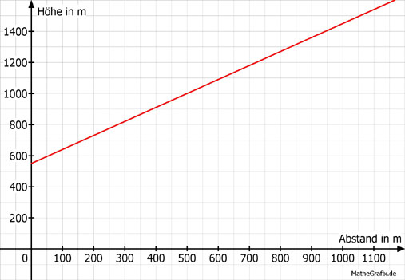
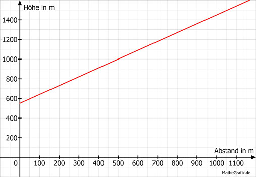

Lineare Funktionen Aufgabe 30
Die Talstation einer Seilbahn liegt in einer Höhe von 550 m.
Die erste Stütze steht in einer Höhe von 820 m und ist 300 m von der
Talstation entfernt.
Die Bergstation ist 700 m von der Talstation entfernt.
a) Welche Steigung hat die Bahn?
b) Ergänzen Sie die Wertetabelle für den Graphen von h
in Abhängigkeit von l.
c) Auf welcher Höhe liegt die Bergstation?
a)
 Höhe der Stütze 820 m - 550 m 270 m
m = ---------------------------- = ----------------- = ------- =
Abstand von der Talstation 300 m 300 m
m = 0,9
b)
h = 0,9 * l + 550
Abstand l in m 100 400
Höhe h in m 640 910
h100 = 0,9 * 100 + 550 = 640 m
h400 = 0,9 * 400 + 550 = 910 m

c)
h700 = 0,9 * 700 + 550 = 1 180 m
Höhe der Stütze 820 m - 550 m 270 m
m = ---------------------------- = ----------------- = ------- =
Abstand von der Talstation 300 m 300 m
m = 0,9
b)
h = 0,9 * l + 550
Abstand l in m 100 400
Höhe h in m 640 910
h100 = 0,9 * 100 + 550 = 640 m
h400 = 0,9 * 400 + 550 = 910 m

c)
h700 = 0,9 * 700 + 550 = 1 180 m